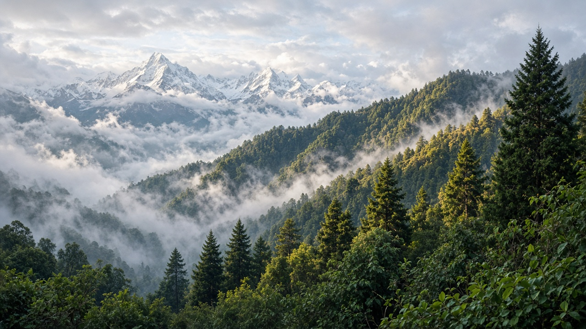

Forest & Terrestrial Ecosystems
वन र स्थलीय पारिस्थितिक प्रणाली

Possible subtopics to explore for forests, grasslands, soils, and sustainable land stewardship.
वन र स्थलीय पारिस्थितिक प्रणाली

Possible subtopics to explore for forests, grasslands, soils, and sustainable land stewardship.